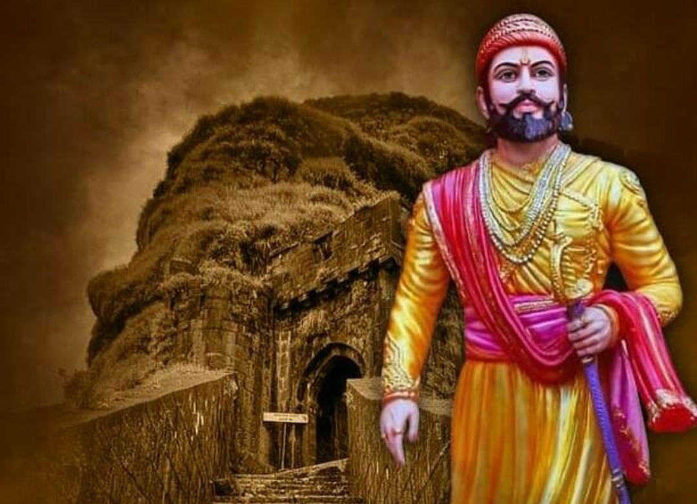

पुणे जिल्ह्यातील जुन्नर शहरानजीक वसलेल्या शिवनेरी या डोंगरी किल्ल्यावर इ.स. १६३० मध्ये छत्रपती शिवाजी महाराजांचा जन्म झाला. इतिहासाच्या अभ्यासकांमध्ये छत्रपती शिवाजी महाराजांची नेमकी जन्मतारीख हा एकेकाळी मतभेदांचा मुद्दा होता. तो वाद नंतर मिटला. महाराष्ट्र राज्य शासनाने फाल्गुन वद्य तृतीया शके १५५१ (शुक्रवार, १९ फेब्रुवारी १६३०) ही शिवरायांची जन्मतारीख २००१ साली स्वीकारली.[३] इतर संभाव्य तारखांमध्ये ६ एप्रिल १६२७ (वैशाख शुद्ध तृतीया) ही एक जन्मतारीख मानली जात होती. एका आख्यायिकेनुसार शिवनेरी गडावरील शिवाई देवीला जिजाबाईंनी आपल्याला बलवान पुत्र व्हावा अशी प्रार्थना केली होती म्हणून या मुलाचे नाव 'शिवाजी' ठेवले गेले. शिवाजी महाराजांच्या जन्माच्या वेळी दख्खनमधील राजसत्ता विजापूर, अहमदनगर आणि गोवळकोंडा या तीन मुसलमानी सल्तनतींमध्ये विभागलेली होती. शहाजीराजांनी आपली निष्ठा वेळोवेळी अहमदनगरची निजामशाही, विजापूरची आदिलशाही आणि मुघल यांच्यादरम्यान बदलली; पण त्यांनी पुणे ही नेहमीच आपली जहागिरी ठेवली आणि स्वतःची एक लहानशी फौज पदरी बाळगली.
कौटुंबिक माहिती
शहाजीराजे भोसले (वडील)
हे प्रथम अहमदनगरच्या निजामशहाच्या पदरी एक सरदार म्हणून होते. मलिक अंबर ह्या निजामशहाच्या प्रभावी वजिराच्या मृत्यूनंतर मोगल सम्राट शहाजहानच्या सैन्याने इ.स. १६३६ मध्ये अहमदनगरवर चाल करून ते शहर आपल्या ताब्यात घेतल्यानंतर शहाजीराजे विजापूरच्या आदिलशहाच्या पदरी सरदार म्हणून रूजू झाले. आदिलशहाने त्यांना पुण्याची जहागिरी दिली. शहाजीराजांनी तुकाबाईंशी आपला दुसरा विवाह केला. लहान शिवाजीराजांना घेऊन जिजाबाई पुण्याला रहायला आल्या. तुकाबाई आणि शहाजीराजे ह्यांच्या एकोजी भोसले (व्यंकोजी भोसले) ह्या पुत्रांनी पुढे सध्याच्या तमिळनाडूमधील तंजावरला आपले राज्य स्थापन केले.
जिजाबाई (आई)
जिजाबाई व बाल शिवाजी
जिजाबाई पुण्यात रहायला गेल्या त्यावेळी पुण्याची फार दुरवस्था झालेली होती. तेव्हा छोटे शिवाजीराजे आणि कारभारी ह्यांच्या हस्ते पुण्यात एका शेतात प्रतीकादाखल सोन्याच्या मुलाम्याचा नांगर फिरवून, जिजाबाईंनी पुण्याची पुन:स्थापना करायला सुरुवात केली. शिवाजीराजे लहानाचे मोठे होत असताना आणि मोठे झाल्यावरही (मोठेपणीच्या सिंहगडावरच्या स्वारीसारख्या) प्रत्येक महत्त्वाच्या प्रसंगी त्यांना जिजाबाईंनी खंबीर मार्गदर्शन दिले. शिवाजीमहाराजांच्या त्या आद्यगुरू होत. हिंदवी स्वराज्यस्थापनेचे स्वप्न साकार करायला शिवाजीमहाराजांना जिजाबाईंनी स्फूर्ती दिली असे काही इतिहासकार मानतात.
मार्गदर्शक
लोककथा आणि इतिहास ह्यांमध्ये कालौघात पुष्कळदा सरमिसळ होते आणि त्यामुळे इतिहासाचा नेमका मागोवा घेणे कठीण होते. शिवाजीमहाराजांच्या बाबतीत ती सरमिसळ खूपच आहे; परिणामी शिवाजीराजांना कोणाचे मार्गदर्शन किती मिळाले हे नक्की ठरवणे निदान आज तरी कठीण आहे. युद्धाभ्यास आणि रणनीती तसेच राजकारभार ह्यासंबंधी प्राथमिक मार्गदर्शन त्यांना शहाजीराजांकडून, दप्तरव्यवस्था व न्यायव्यवस्थेचे शिक्षण दादोजी कोंडदेव मलठणकर यांजकडून, तर परकीय सत्तेविरूद्ध लढा करण्याकरता आवश्यक असलेल्या शिस्तीचे शिक्षण जिजाबाईंकडून मिळाले असे मात्र उपलब्ध ऐतिहासिक माहितीवरून निश्चितपणे सांगता येते. जिजाबाई यांनी बाल शिवाजीमहाराजांच्या शिक्षणाची जबाबदारी घेऊन त्यांस युद्धकला व राजनीतिशास्त्राचे शिक्षण देवविले. शिवाय संत एकनाथ महाराजांच्या भावार्थ रामायण, भारूड इत्यादींच्या माध्यमातून बाल शिवबाच्या मनात स्वराज्याचे स्फुल्लिंग चेतविले.
पत्नी
सईबाई निंबाळकर
सोयराबाई मोहिते
पुतळाबाई पालकर
लक्ष्मीबाई विचारे
काशीबाई जाधव
सगणाबाई शिंदे
गुणवंतीबाई इंगळे
सकवारबाई गायकवाड
वंशज
मुलगे
छत्रपती संभाजी भोसले
छत्रपती राजारामराजे भोसले
मुली
अंबिकाबाई महाडीक
कमळाबाई (सकवारबाईची कन्या)
दीपाबाई
राजकुंवरबाई शिर्के (सगुणाबाईची मुलगी, गणोजी शिर्के यांची पत्नी)
राणूबाई पाटकर
सखुबाई निंबाळकर (सईबाईची मुलगी)
सुना
संभाजीच्या पत्नी येसूबाई
राजारामांच्या पत्नी ताराबाई (माहेरच्या मोहिते)
जानकीबाई
राजसबाई (पुत्र संभाजी - १६९८-१७६०)
अंबिकाबाई (सती गेली)
सगुणाबाई
नातवंडे
संभाजीचा मुलगा - शाहू
ताराबाईची राजारामाची मुले - दुसरा शिवाजी
राजसबाईची मुले - दुसरा संभाजी
पतवंडे
ताराबाईचा नातू रामराजा, याला शाहूने दत्तक घेतले, म्हणजे तो स्वतःचाच काका झाला.
दुसऱ्या संभाजीचा मुलगा - द्वितीय शिवाजी (खरेतर ३रा शिवाजी) (कोल्हापूर)